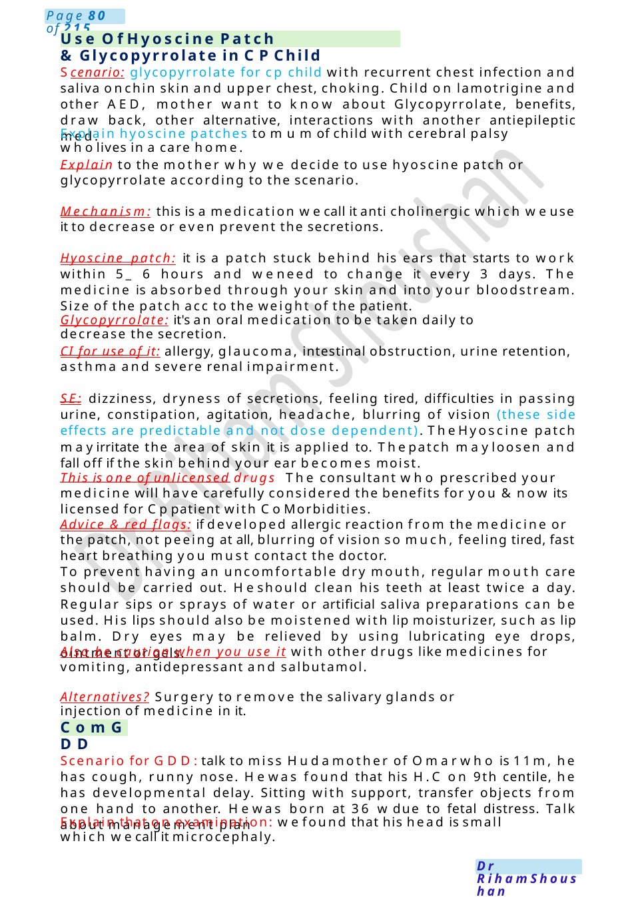
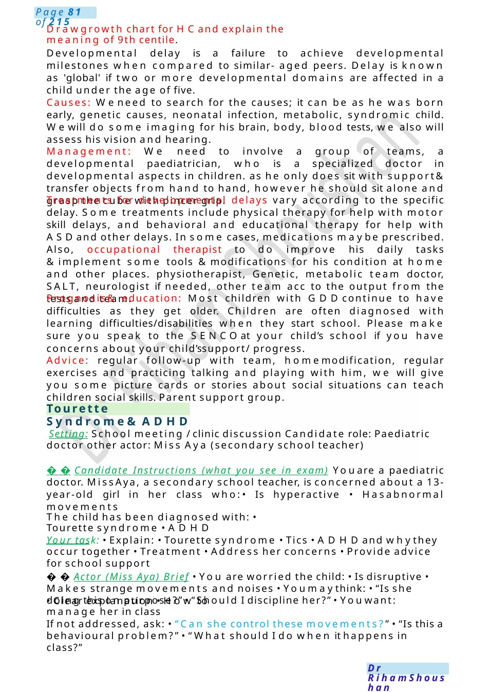

Use of Hyoscine Patch &Glycopyrrolate in CPChild
Scenario: glycopyrrolate for cp child with recurrent chest infection and saliva onchin skin and upper chest, choking. Child on lamotrigine and other AED, mother want to know about Glycopyrrolate, benefits, draw back, other alternative, interactions with another antiepileptic med. Explain hyoscine patches to mumof child with cerebral palsy wholives in a care home.
Scenario Summary
Scenario: glycopyrrolate for cp child with recurrent chest infection and saliva onchin skin and upper chest, choking. Child on lamotrigine and other AED, mother want to know about Glycopyrrolate, benefits, draw back, other alternative, interactions with another antiepileptic med. Explain hyoscine patches to mumof child with cerebral palsy wholives in a care home.
Full Original Scenario

Use Of Hyoscine Patch &Glycopyrrolate in CPChild
ComGDD
Scenario: glycopyrrolate for cp child with recurrent chest infection and saliva onchin skin and upper chest, choking. Child on lamotrigine and other AED, mother want to know about Glycopyrrolate, benefits, draw back, other alternative, interactions with another antiepileptic med.
Explain hyoscine patches to mumof child with cerebral palsy wholives in a care home.
Explain to the mother why we decide to use hyoscine patch or glycopyrrolate according to the scenario.
Mechanism: this is a medication wecall it anti cholinergic which weuse it to decrease or even prevent the secretions.
Hyoscine patch: it is a patch stuck behind his ears that starts to work within 5_ 6 hours and weneed to change it every 3 days. The medicine is absorbed through your skin and into your bloodstream. Size of the patch acc to the weight of the patient.
Glycopyrrolate: it's an oral medication to be taken daily to decrease the secretion.
CI for use of it: allergy, glaucoma, intestinal obstruction, urine retention, asthma and severe renal impairment.
SE: dizziness, dryness of secretions, feeling tired, difficulties in passing urine, constipation, agitation, headache, blurring of vision (these side effects are predictable and not dose dependent). The Hyoscine patch mayirritate the area of skin it is applied to. Thepatch mayloosen and fall off if the skin behind your ear becomes moist.
This is one of unlicensed drugs The consultant who prescribed your medicine will have carefully considered the benefits for you &now its licensed for Cppatient with Co Morbidities.
Advice & red flags: if developed allergic reaction from the medicine or the patch, not peeing at all, blurring of vision so much, feeling tired, fast heart breathing you must contact the doctor.
To prevent having an uncomfortable dry mouth, regular mouth care should be carried out. Heshould clean his teeth at least twice a day. Regular sips or sprays of water or artificial saliva preparations can be used. His lips should also be moistened with lip moisturizer, such as lip balm. Dry eyes may be relieved by using lubricating eye drops, ointment or gels.
Also be caution when you use it with other drugs like medicines for vomiting, antidepressant and salbutamol.
Alternatives? Surgery to remove the salivary glands or injection of medicine in it.
Scenario for GDD:talk to miss Hudamother of Omarwho is 11m, he has cough, runny nose. Hewas found that his H.C on 9th centile, he has developmental delay. Sitting with support, transfer objects from one hand to another. Hewas born at 36 wdue to fetal distress. Talk about management plan
Explain that on examination: wefound that his head is small which wecall it microcephaly.

Tourette Syndrome&ADHD
Drawgrowth chart for HCand explain the meaning of 9th centile.
Developmental delay is a failure to achieve developmental milestones when compared to similar- aged peers. Delay is known as 'global' if two or more developmental domains are affected in a child under the age of five.
Causes: Weneed to search for the causes; it can be as he was born early, genetic causes, neonatal infection, metabolic, syndromic child. Wewill do some imaging for his brain, body, blood tests, we also will assess his vision and hearing.
Management: We need to involve a group of teams, a developmental paediatrician, who is a specialized doctor in developmental aspects in children. as he only does sit with support& transfer objects from hand to hand, however he should sit alone and grasp the cube with pincer grip.
Treatments for developmental delays vary according to the specific delay. Some treatments include physical therapy for help with motor skill delays, and behavioral and educational therapy for help with ASDand other delays. In some cases, medications maybe prescribed.
Also, occupational therapist to do improve his daily tasks &implement some tools &modifications for his condition at home and other places. physiotherapist, Genetic, metabolic team doctor, SALT, neurologist if needed, other team acc to the output from the tests and team.
Prognosis& education: Most children with GDDcontinue to have difficulties as they get older. Children are often diagnosed with learning difficulties/disabilities when they start school. Please make sure you speak to the SENCOat your child’s school if you have concerns about your child’ssupport/ progress.
Advice: regular follow-up with team, homemodification, regular exercises and practicing talking and playing with him, we will give you some picture cards or stories about social situations can teach children social skills. Parent support group.
Setting: School meeting / clinic discussion Candidate role: Paediatric doctor other actor: Miss Aya (secondary school teacher)
Candidate Instructions (what you see in exam) Youare a paediatric doctor. Miss Aya, a secondary school teacher, is concerned about a 13-year-old girl in her class who:• Is hyperactive • Hasabnormal movements
The child has been diagnosed with: • Tourette syndrome • ADHD
Your task: • Explain: • Tourette syndrome • Tics • ADHDand whythey occur together • Treatment • Address her concerns • Provide advice for school support
Actor (Miss Aya) Brief • You are worried the child: • Is disruptive • Makes strange movements and noises • Youmaythink: • “Is she doing this on purpose?” • “Should I discipline her?” • Youwant:
- Clear explanation • How to manage her in class
If not addressed, ask: • “Can she control these movements?” • “Is this a behavioural problem?” • “What should I do when it happens in class?”